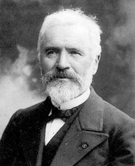

| Choisissez votre langue ! | Choose your language ! |
La forme de Jordan
Jordan form
Nous allons d'abord définir les 'matrices de Jordan' qui sont des morphologiquement très voisines des , puis nous montrerons que dans les conditions ci-dessus, relativement à une base bien choisie, toute matrice peut être décomposée en 'blocs de Jordan'
We will first define the 'Jordan matrices' (or 'Jordan blocks') which are morphologically very similar to , then we will show that under the above conditions, relative to a well-chosen basis, any matrix can be decomposed into 'blocks of Jordan'

Camille Jordan - Image:http://fr.wikipedia.org/wiki/Fichier:Jordan_3.jpeg
Matrices de Jordan
Jordan matrices
\( \displaystyle \begin{pmatrix} \lambda & 1& 0 & 0& . & 0 & 0 \\ 0 & \lambda & 1 & 0 & . & 0 &0 \\ 0 & 0 & \lambda & 1 & . & 0 & 0 \\ . & . & . & . & . & . & . \\ 0 & 0 & 0 & 0 & . & \lambda & 1 \\ 0& 0 & 0 & 0 & . & 0 & \lambda \\ \end{pmatrix} \)
\( \displaystyle \begin{pmatrix} \lambda & 1& 0 & 0& . & 0 & 0 \\ 0 & \lambda & 1 & 0 & . & 0 &0 \\ 0 & 0 & \lambda & 1 & . & 0 & 0 \\ . & . & . & . & . & . & . \\ 0 & 0 & 0 & 0 & . & \lambda & 1 \\ 0& 0 & 0 & 0 & . & 0 & \lambda \\ \end{pmatrix} \)
- Ordre 1 : \( \displaystyle \begin{pmatrix} \lambda \end{pmatrix} \)
- Ordre 2 : \( \displaystyle \begin{pmatrix} \lambda & 1 \\ 0 & \lambda \\ \end{pmatrix} \)
- Ordre 3 : \( \displaystyle \begin{pmatrix} \lambda & 1& 0\\ 0 & \lambda & 1\\ 0& 0& \lambda \\ \end{pmatrix} \)
- Order 1 : \( \displaystyle \begin{pmatrix} \lambda \end{pmatrix} \)
- Order 2 : \( \displaystyle \begin{pmatrix} \lambda & 1 \\ 0 & \lambda \\ \end{pmatrix} \)
- Order 3 : \( \displaystyle \begin{pmatrix} \lambda & 1& 0\\ 0 & \lambda & 1\\ 0& 0& \lambda \\ \end{pmatrix} \)
Théorème de décomposition
Decomposition theorem
pu(X)=(λ1-X)r1 (λ2-X)r2 ...(λq-X)rq
soit la décomposition du de u en facteurs du premier degré.
Posons Ei=Ker(u-λi)ri pour 1≤i≤q
Dans ces conditions: E = E1⊕E2⊕...⊕Eq
Chaque Ei est de dimension ri
pu(X)=(λ1-X)r1 (λ2-X)r2 ...(λq-X)rq
is the decomposition of the of u in factors of the first degree.
Let Ei=Ker(u-λi)ri for 1≤i≤q
Under these conditions: E = E1⊕E2⊕...⊕Eq
Each Ei has dimension ri
démonstration
La démonstration utilise un résultat d'algèbre non démontré ici, mais dont on pourra trouver un analogue dans le modules 'Nombres' (chapitre 'Entiers Relatifs'). Il s'agit du , que nous énonçons ci-après:Soient p1(X), ..., pq (X) q polynômes premiers entre eux, alors il existe des polynômes h1(X), ... ,hq(x) tels que: 1 = p1(X)h1(X) +...+pq(X)hq(X)
Posons fi(X)=(λi-X) ri
et gi(X)=u(X)/fi(X)
Alors les gi sont premiers entre eux. Il existe donc des polynômes hi(X) tels que: 1 = h1(X)g1(X)+...+hq(X)gq(X)
Posons maintenant ui=fi(u) vi=gi(u) wi=hi(u)
On définit ainsi q endomorphismes qui commutent 2 à deux parce que ce sont tous des polynômes en u.
Le théorème de Bezout peut donc s'écrire en remplaçant l'inconnue X par u et 1 par l'unité i de GL(E):
w1ov1+...+wqovq=i
Ce qui peut encore s'écrire:
x=w1(v1(x)+...+ wq(vq(x)) ∀ x ∈ E
Cela dit on a d'après le théorème de Hamilton-Cayley
pu(u)=fi(u)gi(u)=uiovi=0
Donc à plus forte raison wiouiovi = uiowiovi=0
Ce qui prouve que pour tout x wi(vi(x)) ∈ Ei
donc que tout vecteur x peut s'écrire sous la forme:
x=x1+...+xq où chaque xi ∈ Ei donc que E= E1+...+Eq
Sachant que r1+...+rq=n, pour montrer que la somme est directe il suffit de montrer que:
dim(Ei) ≤ ri pour chaque i 1≤i≤q
Comme u commute avec ui, il est clair que pour chaque i u(Ei) ⊆ Ei. Désignons par u'i l'endomorphisme de Ei induit par u. On voit que le polynôme caractéristique de u'i divise pu(X).
Il existe une base de Ei par rapport à laquelle la matrice de u'i est triangulaire. Mais comme on a (u'i-λi)ri =0 par définition des Ei et des u'i.
Les coefficients diagonaux de la matrice de u'i par rapport à la base en question sont donc les λi de sorte que pu'i (X)=(λi-X)dim(Ei) .
L'inégalité dim(Ei) ≤ ri résulte donc du fait que pu'i divise pu.
proof
The demonstration uses a result of algebra not demonstrated here, but of which one can find a analogous in the 'Numbers' module (chapter 'Relative Integers'). It's aboutLet p1(X), ..., pq (X) q coprime polynomials, then there exist polynomials h1(X), ... ,hq(x) such that: 1 = p1(X)h1(X) +...+pq(X)hq(X)
Let fi(X)=(λi-X)ri
and gi(X)=u(X)/fi(X)
The gi are coprime to each other. So there are polynomials hi(X) such that: 1 = h1(X)g1(X)+...+hq(X)gq(X)
Let us now set ui=fi(u) vi=gi(u) wi=hi(u)
We thus define q endomorphisms which commute 2 by two because they are all polynomials in u.
Bezout's theorem can therefore be written by replacing the unknown X by u and 1 by the unit i of GL(E):
w1ov1+...+wqovq=i
Which can still be written:
x=w1(v1(x)+...+ wq(vq(x)) ∀ x ∈ E
That being said, we have by the Hamilton-Cayley theorem
pu(u)=fi(u)gi(u)=ui ovi=0
So all the more wiouiovi = ui owiovi=0
Which proves that for all x wi(vi(x)) ∈ Ei
so that any vector x can be written in the form:
x=x1+...+xq where each xi ∈Ei so that E= E1+...+Eq
Knowing that r1+...+rq=n, to show that the sum is direct it suffices to show that:
dim(Ei) ≤ rifor each i 1≤i≤q
As u commutes with ui, it is clear that for each i u(Ei) ⊆ Ei. Let us denote by u'i the endomorphism of Ei induced by u. We see that the characteristic polynomial of u'i divide pu(X).
There is a basis of Ei with respect to which the matrix of u'i is triangular. But since we have (u'i-λi)ri =0 by definition of Ei and u'i.
The diagonal coefficients of the matrix of u'i with respect to the base in question are therefore the λi so that pu'i (X)=(λi-X)dim(Ei) .
The inequality dim(Ei) ≤ ri therefore results from the fact that pu'i divides pu.
Réduction à la forme de Jordan
Reduction to Jordan form
\( \displaystyle \begin{pmatrix} U_{1} & 0 & 0 & 0 & 0 \\ 0 & U_{2} & 0& . & 0 \\ .& . & . & . & . \\ .& . & . & . & U_{r} \\ \end{pmatrix} \)
où chaque matrice Ui est une matrice de Jordan\( \displaystyle \begin{pmatrix} U_{1} & 0 & 0 & 0 & 0 \\ 0 & U_{2} & 0& . & 0 \\ .& . & . & . & . \\ .& . & . & . & U_{r} \\ \end{pmatrix} \)
where each matrix Ui is a Jordan matrixdémonstration
La démonstration utilise le résultat précédent conjointement avec les résultats de la page précédente sur les endomorphismes .Soient donc λ1, ..., λq les diverses valeurs propres de u avec des multiplicités respectives r1, ..., rq. Soit Ei les q sous-espaces Ker(u-λi)ri .
On sait que les sous espaces Ei sont en somme directe et sont de dimensions ri.
Puisque u commute à (u-λi)ri chaque Ei est stable par u.
Soit ui la restriction de u à Ei . Alors ui-λi est nilpotent par définition des Ei.
Il suffit donc d'appliquer le théorème de structure à chacun des endomorphismes ui-λi sur les sous-espaces Ei.
Considérons alors une base de E formée d'une réunion de bases des Ei pour lesquelles chaque endomorphisme nilpotent ui- λi a une matrice réduite.
Supposons, par exemple, que la matrice de u1-λ1 soit :
\( \displaystyle \begin{pmatrix} 0& 1 & 0 & 0 & 0 & 0 & 0 \\ 0 & 0 & 1 & 0 & 0 & 0 & 0 \\ 0 & 0 & 0 & 0 & 0 & 0 & 0 \\ 0 & 0 & 0 & 0 & 0 & 0 & 0 \\ 0 & 0 & 0 & 0 & 0 & 1 & 0 \\ 0 & 0 & 0 & 0 & 0 & 0 & 1 \\ 0& 0 & 0 & 0 & 0 & 0 & 0 \\ \end{pmatrix} \)
Cette matrice peut être réécrite :\( \displaystyle \begin{pmatrix} U_{1} & 0 & 0 \\ 0& U_{2} & 0 \\ 0& 0 & U_{3} \\ \end{pmatrix} \)
avec :- \( \displaystyle U_{1}=\begin{pmatrix} 0& 1 & 0 \\ 0 & 0 & 1 \\ 0 & 0 & 0 \\ \end{pmatrix} \)
- \( \displaystyle U_{2}=(0) \)
- \( \displaystyle U_{3}=U_{1} \)
\( \displaystyle \begin{pmatrix} V_{1} & 0 & 0 \\ 0& V_{2} & 0 \\ 0& 0 & V_{3} \\ \end{pmatrix} \)
où- \( \displaystyle V_{1}=\begin{pmatrix} \lambda_{1}& 1 & 0 \\ 0 & \lambda_{1} & 1 \\ 0 & 0 & \lambda_{1} \\ \end{pmatrix} \)
- \( \displaystyle V_{2}=(\lambda_{1}) \)
- \( \displaystyle V_{3}=V_{1} \)
proof
The demo uses the previous result together with the results of the previous page on endomorphisms.Let λ1, ..., λq the various eigenvalues of u with respective multiplicities r1, ..., rq. Let Ei the q subspaces Ker(u-λi)ri .
We know that the subspaces Ei are in direct sum and have dimensions ri.
Since u commutes to (u-λi)ri each Ei is stable by u.
Let ui be the restriction of u to Ei . Then ui-λi is nilpotent by definition of Ei.
It is therefore sufficient to apply the structure theorem to each of the endomorphisms ui-λi on the subspaces Ei.
Let us then consider a basis of E formed from a union of bases of Ei for which each nilpotent endomorphism ui- λi has a reduced matrix.
Suppose, for example, that the matrix of u1-λ1 that is :
\( \displaystyle \begin{pmatrix} 0& 1 & 0 & 0 & 0 & 0 & 0 \\ 0 & 0 & 1 & 0 & 0 & 0 & 0 \\ 0 & 0 & 0 & 0 & 0 & 0 & 0 \\ 0 & 0 & 0 & 0 & 0 & 0 & 0 \\ 0 & 0 & 0 & 0 & 0 & 1 & 0 \\ 0 & 0 & 0 & 0 & 0 & 0 & 1 \\ 0& 0 & 0 & 0 & 0 & 0 & 0 \\ \end{pmatrix} \)
This matrix can be rewritten:\( \displaystyle \begin{pmatrix} U_{1} & 0 & 0 \\ 0& U_{2} & 0 \\ 0& 0 & U_{3} \\ \end{pmatrix} \)
with :- \( \displaystyle U_{1}=\begin{pmatrix} 0& 1 & 0 \\ 0 & 0 & 1 \\ 0 & 0 & 0 \\ \end{pmatrix} \)
- \( \displaystyle U_{2}=(0) \)
- \( \displaystyle U_{3}=U_{1} \)
\( \displaystyle \begin{pmatrix} V_{1} & 0 & 0 \\ 0& V_{2} & 0 \\ 0& 0 & V_{3} \\ \end{pmatrix} \)
where- \( \displaystyle V_{1}=\begin{pmatrix} \lambda_{1}& 1 & 0 \\ 0 & \lambda_{1} & 1 \\ 0 & 0 & \lambda_{1} \\ \end{pmatrix} \)
- \( \displaystyle V_{2}=(\lambda_{1}) \)
- \( \displaystyle V_{3}=V_{1} \)
Exemple pratique de décomposition
Cherchons à réduire :Practical example of decomposition
We want to reduce:\( \displaystyle \begin{pmatrix} 3& 1 & 0 & 0 \\ -4 & -1 & 0 & 0 \\ 7 & 1 & 2 & 1 \\ -17 & -6 & -1 & 0 \\ \end{pmatrix} \)
Equivalent Julia 1.6
Il nous faut maintenant calculer la dimension de Ker(u-i).
On trouve 2.
Il faut donc partir d'une base d'un supplémentaire de Ker(u-i).
On peut prendre x1 =(1,0,0,0) et x2 =(0,1,0,0)
On les transforme par u-i en :
x3 =(2,-4,7,-17) x4 =(1,-2,1,-6)
On prendra donc la base: B=(x3,x1,x4,x2)
L'inverse P-1 de la matrice de passage est donc:
Equivalent Julia 1.6
We now need to calculate the dimension of Ker(u-i).
We find 2.
It is therefore necessary to start from a basis of a supplementary of Ker(u-i).
We can take x1 =(1,0,0,0) and x2 =(0,1,0,0)
We transform them by u-i into:
x3=(2,-4,7,-17) x4=(1,-2,1,-6)
We will therefore take the base: B=(x3,x1,x4,x2)
The inverse P-1 of the transition matrix is therefore:
\( \displaystyle \begin{pmatrix} 2& 1 & 1 & 0 \\ -4 & 0 & -2 & 1 \\ 7 & 0 & 1 & 0 \\ -17 & 0 & -6 & 0 \\ \end{pmatrix} \)
\( \displaystyle \begin{pmatrix} 0 & 0 & 6/25 & 1/25 \\ 1 & 0 & 1/5 & 1/5 \\ 0 & 0 & -17/25 & -7/25 \\ 0 & 1 & -2/5 & -2/5 \\ \end{pmatrix} \)
\( \displaystyle \begin{pmatrix} 1& 1 & 0 & 0 \\ 0 & 1 & 0 & 0 \\ 0 & 0 & 1 & 1 \\ 0 & 0 & 0 & 1 \\ \end{pmatrix} \)
Utilité pratique
Il va de soi qu'une telle décomposition ne se fait pas dans un but uniquement esthétique. De fait ce résultat est très lié à la théorie des équations différentielles linéaires à coefficients constants. Cette théorie est la généralisation à n fonctions de l'équation différentielle classique:y'=ay dont la forme générale de la solution est y=keat. La généralisation donc s'écrit:
Y'=AY où Y est en fait une fonction d'une variable à valeurs dans ℝn ou bien ℂn
Y=(y1(t),...,yn(t)) La théorie dit que la solution générale est de la forme Y=exp(tA)Y0 où Y0 est le vecteur (y1(0),...,yn(0)).
Tout revient donc à calculer l'exponentielle d'une matrice définie à priori comme la somme d'une série infinie:
Practical utility
It goes without saying that such a decomposition does not done for aesthetic purposes only. In fact this result is closely related to the theory of linear differential equations with constant coefficients. This theory is the generalization to n functions of the usual differential equation:y'=ay the general solution form of which is y=keat. The generalization then reads:
Y'=AY where Y is in fact a function of a variable with values in ℝn or else ℂn
Y=(y1(t),...,yn(t)) The theory says that the general solution is of the form Y=exp(tA)Y0 where Y0 is the vector (y1(0),...,yn(0)).
Everything therefore amounts to calculating the exponential of a matrix defined a priori as the sum of an infinite series:
\( \displaystyle exp(A)= \sum_{k=0}^{\infty } \frac{1}{k!}A^{k} \)
Pour une telle matrice on a:
J=D+N où D est et N D et N commutant.
On a donc exp(J)=exp(D)×exp(N).
Or l'exponentielle d'une matrice diagonale est la matrice diagonale des exponentielles des éléments diagonaux.
L'exponentielle d'une matrice nilpotente est un simple polynôme puisque tous les termes de la série sont nuls à partir d'un certain rang.
For such a matrix we have:
J=D+N where D is and N D and N commuting.
So we have exp(J)=exp(D)×exp(N).
Now the exponential of a diagonal matrix is the diagonal matrix of the exponentials of the diagonal elements.
The exponential of a nilpotent matrix is a simple polynomial since all the terms of the series are zero from a certain rank.
|
Création Gilles Dubois - licence CC-BY-SA
Created by Gilles Dubois - licence CC-BY-SA
|
Septembre 2023
September 2023
|
|